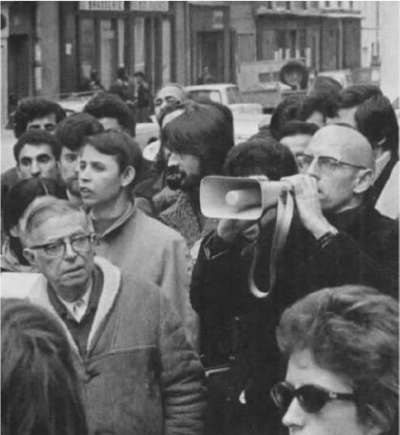
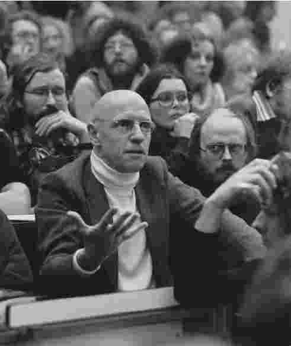

对于自己从政治上难以归类这一事实，米歇尔·福柯一直非常得意：
［“论辩术、政治学和问题化”，《福柯主要作品集》（卷三），第115页］
在1968年5月的学生抗议运动期间，尽管福柯身在突尼斯，莫里斯·布朗肖却声称在期间的一场游行中看到了福柯并和他说过话。若果真如此，这就是福柯同他宣称曾“梦想成为”的人之间唯一的一次会晤。无论故事是真是假——或许福柯真的在那个夏天回法国待了几天，它都可以作为福柯的生命和思想中审美与政治之间张力的绝好象征。或许，正是在这个转折点，即当福柯正从把高雅艺术看做人类解放的希望转而认识到世俗的政治领域才是实现人类自由不可避免的战场时，福柯遇到了他的文学英雄。不管怎样，福柯的态度在20世纪60年代末发生了改变，到1977年，他已经开始用过去时态描述现代主义文学理论了，着重提到60年代的一波文学热情（和巴特之类的批评家、索莱尔斯之类的作家以及《如是》之类的杂志一起）已经是该理论的绝唱。福柯没有提及的是，他自己是这场悲哀合唱中一个重要的声音。
我们没有必要把福柯的作品看成是在20世纪70年代走向一个和过去截然不同的方向。他自己曾说，“我自问，我在《疯癫与文明》和《临床医学的诞生》中除了权力之外还谈了些什么？”福柯的话有一定道理。虽然他接着就解释说，他在谈论疯癫的书中不具备将权力主题化的概念工具［“真实与权力”，《福柯主要作品集》（卷三），第117页］。但无疑，福柯1968年之后的作品表现出明显的政治倾向，为他写作之外的生活增加了更多的激进主义色彩。
自从二战以后——要不就是从德雷福斯事件或法国大革命起——法国知识界就有一种强烈的政治关怀。那些深奥的哲学或社会学论文往往因其暗含的对当前政治事件的立场（prises de position）而受到谴责或赞扬。让-保罗·萨特一贯主张写作必须有倾向性（engagée），该观点明确体现了这一态度。对萨特来说，所谓的倾向性文学（La littérature engagée）就是指那些认识到自身同历史情境不可避免的联系，同时竭力使读者意识到那种情境下人类解放的潜在可能并为之奋斗的作品。萨特认为，这样的作品不仅是一种政治宣言，因为它不服务于任何特定的意识形态，而且表达了“隐含在社会和政治论辩中的永恒真理”（《情境种种：第二卷》，第15页）。

图4 福柯和萨特在巴黎的游行示威中，1972年11月27日
福柯和他同时代的知识分子一样在萨特的影响之下长大，要理解他的政治见解，我们必须将之与萨特进行比较。对于萨特来说，最具决定意义的政治经历就是战争及德国对法国的占领。这样的经历使萨特以“忠诚”和“背叛”这类绝对的词来理解政治决策，这两个词对应了要么支持抵抗、要么勾结敌方这两种毫无回旋余地的选择。正如萨特所言：“无论周围环境如何，不管一个人置身何地，他总能自由选择是否做一个叛国者。”（多年以后，他在一次访谈中引述了这段话，然后说：“当我读着这段话的时候，我对自己说：真是令人吃惊，我居然真的相信这段话！”他把自己的这种态度归结于“战争的戏剧性体验和英雄主义的经历”（《在存在主义和马克思主义之间》，第33-34页）。战争留下的另一个教训是——这不只是对萨特而言——法国共产党在道德和政治上的优势地位。作为战争中抵抗一派的先锋，共产党甚至赢得了那些并不赞成他们的政治和社会目标的法国人的感激和尊重。对于萨特这样的左派知识分子来说，共产主义者在战后法国的信誉毋庸置疑。这并不意味着党员身份不可或缺，比如萨特自己就从未加入共产党。但有很长一段时间，共产党的政治议程主导着他的政治思想和活动，在20世纪50年代的一段时期，无论私下有何异议，他在公开立场上是完全支持共产党的，甚至为此不惜与好友阿尔伯特·加缪、莫里斯·梅洛-庞蒂决裂。无怪乎他逐渐认为马克思主义是“我们时代的一种无法超越的哲学”（《辩证理性批判》，第xxxiv页）。
福柯晚于萨特二十一年出生，他经历战争时还不是一个政治上觉醒了的成年人，而是一个迷茫无措的少年。福柯成长的时候正值法国战后政治局势动荡、政治方向晦暗不明，他怀疑萨特在伦理和政治方面所持的绝对观点，对于福柯自己所称的“普遍型知识分子”，他们所作的描述也受到了福柯的质疑。很明显，福柯所谓的“普遍型知识分子”是以萨特为原型，意指一种自由精神，“普遍事物的代言人”，“以真理和正义掌握者的身份说话”［“真实与权力”，《福柯主要作品集》（卷三），第126页］。这曾经是一项有意义的事业，但福柯认为，在今天，普适性的道德体系已经不能够对现存的社会和政治问题作出有效的回应。我们需要的是切实深入到问题中去找出具体的应对之策。福柯坚称，这是“专才知识分子”发挥作用的领域，比如教师、工程师、医生和顾问，这些人“手中掌握着能够支持国家或者反对国家、滋养生命或者毁坏生命的权力”［《福柯主要作品集》（卷三），第129页］——这样的人不是萨特，而是奥本海默。
有人曾说，在福柯看来，他自己就是一个专才知识分子，但是（除了他早期关于精神病医院的作品之外），福柯并没有广泛地承担专才知识分子在社会体系中承担的那种特定责任。他更应该被称做——尽管他自己从没用过这个词——一位“批判知识分子”，既不以普适原则的权威身份说话，又不借重特定的社会或政治职责，而只是凭借他的历史学识和分析技巧来言说自己。既不是“妄言永恒存在的人”，又不是“生与死的战略家”［《福柯主要作品集》（卷三），第129页］，批判知识分子只提供思维工具——对战略可能性和策略可能性的清醒认识——以供那些政治战壕中的斗士作战使用。
福柯和萨特在政治见解上最明显的分歧，体现在他对马克思主义和作为其主要代表的共产党的态度上。早年，福柯的确受到过马克思主义观点的吸引。在一次谈话中他告诉采访者，“我属于那样一代人，我们在学生时代眼前是由马克思主义、现象学以及存在主义所构成的地平线，我们的眼界也由此受到局限”（《死亡与迷宫：雷蒙·鲁塞尔的世界》，访谈录，第174页）。（存在主义现象学——尤其是早期海德格尔的那套学说——深深影响过福柯，这在他为路德维希·宾斯万格的德语文章《梦与存在》的法译本所写的长篇导言中体现特别明显。）尤其是由于在巴黎高师时受到当时法国共产党最杰出的理论家路易·阿尔都塞的影响，福柯早年对马克思主义很是着迷。在第一本书《精神病与人格》中，他将马克思主义之外的理论，包括存在主义在内，描绘成只是对事物作出“神秘化的解释”，并且认为精神病的最终根源在于由“冲突、剥削、帝国主义战争、阶级斗争等当前经济条件”所决定的“各种矛盾”（第86页）。某种意义上，福柯比萨特走得更远，并曾一度成为法国共产党的成员。但是，福柯很快对马克思主义的理论和实践两方面都感到失望。他在“大概几个月后”就退党了［“米歇尔·福柯答萨特书”，《言论与写作集：1954-1988》（第一卷），第666页］——事实上福柯的共产党员身份持续了将近一年的时间，并在那本关于精神病的书于1962年再版时（更名为《精神病与心理学》）加入了关于其思想变化的描述。他删除了书中几乎所有的马克思主义成分，包括最后结论的整个章节——那一章原来论述的是巴甫洛夫的反射理论是理解精神疾病的关键所在，然后又增加了一些以他新近出版的博士论文《疯癫史》为基础的全新历史视角。
此后，福柯对待马克思主义的态度复杂矛盾、有失明朗。例如，他在《事物的秩序》一书中发出惊人之论，认为马克思的经济学思想从根本上来说缺乏原创性和革命性，认为这种思想所引发的争议和辩论“只是供儿童嬉戏的水池中激起的水花”（《事物的秩序》，第262页）。然而，在后来的一次访谈中，当采访者就这一点追问福柯时，他又解释说，他在该书中质疑的只是马克思在经济学这一特定领域的重要性，而非马克思主义在社会理论领域中无可争议的主导地位［“关于书写历史的方法”，雷蒙·贝卢尔采访福柯，收录于《言论与写作集：1954-1988》（第一卷），第587页］。由此，人们难免得出结论：福柯对马克思主义还是相当看重的，但他也很乐于刺激一下某些当代法国马克思主义者们自命不凡的敏感神经，在作品和访谈中对他们嘲讽一番。比如，有人指责福柯在引述马克思的观点时没有注明出处，有失妥当，福柯对此的回答是，他的确曾多次明显引述马克思的话，但之所以不屑于加上明确的脚注是为了避免那些对马克思作品不太熟悉的人循此袭用这一引文（《权力/知识：访谈录及其他作品选集，1972-1977》，“关于监狱的谈话”，第52页）。另一方面，福柯在《规训与惩罚》中毫不讳言，鲁舍与基希海默尔的马克思主义作品对他写作监狱史非常重要。
在距离福柯去世前一个月左右的一次访谈中，福柯最直接地声明了自己对马克思主义的态度，这次访谈的采访者是保罗·拉比诺。福柯说：“我既非马克思主义的敌人也非其党徒；我质疑它的正是它面对质疑时会有何回应。”［“论辩术、政治学，和问题化”，《福柯主要作品集》（卷三），第115页］福柯在此把马克思主义看做他这次访谈中所说的“政治学”的一个例子，他似乎想通过这个概念为讨论当前的政治问题提供一个一般性的、富有理论知识的讨论框架。他所要强调的是，此类框架体系不能被视为政治决策的充分基础，而只能被看做一种理论资源，这种资源或许能够（或许不能）提供一种可行的方法帮助我们应对面临的问题。福柯以1968年的学生抗议活动为典型例证，认为那次运动提出了一系列的问题——“关于妇女权益，关于两性关系，关于医疗、环境、少数族裔以及少年犯罪等”——这些问题在马克思主义之类已经确立体系的政治流派中也没有得到探究。同时，他指出，当时学生活动中的那些积极分子似乎认为马克思主义是讨论此类问题的恰当工具：“当时有一种倾向，即希望用从马克思主义生发出来的理论词汇来重新描述所有的问题。”但是，福柯最后的结论是，马克思主义在这项任务面前显然力不从心：“面对这些问题时，马克思主义显得越来越无能为力。”如果说这一切有积极意义，福柯总结道，那就是我们知道了严肃政治问题的提出不一定要依赖于公认的政治理论（即“政治学”），因此，“当前的情况是，人们开始对政治学提出一系列问题，而不是在某一政治学说的框架内重新书写提问这一行为”［《福柯主要作品集》（卷一），第115页］。
福柯对论辩术 和问题化 在政治上进行了区分，并借此概括了自己的观点。应对政治议题时，论辩术采用一套总体性的主义框架，认为唯有这一框架才能为讨论提供坚实的基础。任何人如果不接受该框架，就会被视为需要驳倒的敌人而不能作为合作者来共同解决问题。与宗教界的门派之见（如铲除异端）以及司法程序（如刑事检控）相似，它“划定同盟，征召党徒，统一利益和观点，代表一个党派；它将异己视做争取不同利益的仇敌，不战胜他们决不罢休”［《福柯主要作品集》（卷一），第112页］。（谈到这里，我们难免会想到萨特对共产主义事业的忠心告白：“反共产主义者就是叛徒……我发誓终生仇恨资产阶级”，“梅洛-庞蒂”，《境况种种》，第198页。）福柯反对论辩术的理由是它会带来“贫瘠化”效应：“有谁看到论辩术曾催生过任何新的思想吗？”此外，“一旦有人认为他可以通过这样的途径到达真理，并因此许可以此为据的政治活动，即便这种许可只是象征性的，那将会非常危险”。福柯认为，推崇论辩术最糟糕的后果通常都是“悬置的”，这大概是因为对立的观点中产生绝对的胜利者。但是，福柯接着说，我们知道一旦一方获胜会带来什么后果：“只要看看不久前苏联的语言学或基因学论战我们就会获得不少启发。”［《福柯主要作品集》（卷一），第113页］

图5 福柯参加柏林的抗议集会，1978年1月
另一方面，问题化并不忽视论争中用到的主义框架——这毕竟是我们进行政治思考时主要的理论资源。但问题化从问题开始，这些问题不一定来源于主义框架本身，而是来源于我们在社会中的“切身体验”。我们可以也应该将这些问题不仅放在主义框架（即“政治学”）之内思考，并且也要置于其他各种框架中，不能想当然地认为所有这些模式或任何一种模式能为我们提供充分的答案。促进政治讨论的应该是使我们提出问题的那些具体社会难题，而不是宣称能够回答问题的已经确立体系的理论。
福柯又以理查德·罗蒂的实用主义语言“我们”（族群共识）为例论证了自己的观点——同时也回应了对他的政治学观点的一个重要质疑。福柯解释说，罗蒂指出福柯的政治分析“不针对任何的‘我们’——不指向那些其一致意见、价值观念、生活传统可以构成一种思想框架的‘我们’们”［《福柯主要作品集》（卷一），第114页］。罗蒂所担心的是，由于不从任何的共识出发，福柯混淆了话语的私人空间和公共领域，为只适用于个人的自我创造的价值观（例如，对强烈极限体验的追求）寻求公众支持，这些价值观并不能充当一个自由社会的行为规范。福柯对此的回应是，的确，这样的“我们”很重要，但它只能是作为政治讨论的结果出现而不能成为前提：“在我看来，‘我们’不能先于问题出现，它只能是当人们用一套新的词汇提出问题时产生的结果——并且必然是一个暂时性的结果。”［《福柯主要作品集》（卷一），第114-115页］
福柯的回应有的放矢，但同时也暗中承认了罗蒂质疑的一个关键点。那些先于政治共识而且能够引出政治共识的问题，其本身当然必须能够用日常生活的世俗词汇来表述；否则，它们甚至将没有资格作为一个备选答案来取得嗣后的一致同意。然而，这就意味着无论“难以言表”的极限体验在个人生活中所占的地位如何，这些体验在政治讨论的公共论坛上不可能有一席之地。对于罗蒂关于政治讨论必须从基本共识（比如自由主义政治信条）出发这一观点，福柯可以予以反驳；但另一方面，他也必须承认，罗蒂有充分理由认为那些完全属于个人的价值观念与政治无关，尽管福柯曾在早期的美学作品中对这些价值颇为重视。
如果政治论战不再建基于理论框架，人们自然要问，它到底借重何种权威。当然，我们常常可以抛开那些关于终极价值判断的问题；在心照不宣的共同政治目标的背景之下，如何实现某些政治目标这一实际问题得到凸现。在此类情形下，我们可以说，涉及的问题是实用性质的改革而非根本性的革命。然而，福柯反对把已确立的社会体系内部的变革（转型）同对此种体系的革命性批判相分离。当他和迪迪埃·艾利邦讨论弗朗索瓦·密特朗的社会党在1981年选举中上台时，艾利邦暗示福柯对新政府初期举措的赞同意味着他认为“和这一届政府合作是可能的”，而福柯否定了艾利邦的说法［“思考重要吗？”，《福柯主要作品集》（卷三），第455页］。他坚决反对将自己置于“要么支持、要么反对这种非此即彼的窘境”，认为即便是（体制内部的）改革活动也要有“批判（且是激烈的批判）”，因为任何名副其实的改革都要求有一种敢于进行彻底批判的质疑的思想氛围。相应地，我们不能从“不可实现的激进活动”和“对现实的必要让步”中二者选其一。相反，“深层次的转型（变革）有可能在持续的（革命性的）批判所营造的开放同时又往往动荡的氛围中完成”［《福柯主要作品集》（卷三），第457页］。
然而，这样的立场使得一个问题更加挥之不去：对于现存制度的根本性批判建基何处？因为对福柯而言，这样的批判显然应该是政治生活中恒常不变的现象，而不仅发生在革命动乱的特殊时刻。如果仔细审视一下福柯关于伊朗革命的那场备受争议的讨论，我们就能体会福柯回答此问题的深意；在讨论中福柯表达了早期对这次革命的同情，这让很多人感到不安。然而福柯同情的只是反抗这一基本行动：“一种本能的冲动，这种冲动能够使一个个人、一个群体、一个少数族裔甚至整个民族说出‘我将不再服从’，然后冒着失去生命的危险起而反抗那个他们认为有失公正的权威。”［“起义没用吗？”，《福柯主要作品集》（卷三），第449页］福柯声称，这样的行动是“无法磨灭的”，甚至是对“历史及其长期理性桎梏”的“逃离”。决心“甘愿冒着死亡的危险而不接受必须服从的确定宿命”，这正是争取任何权利的“最后落脚点”，也比“‘自然权利’更牢靠、更接近生活经验”［《福柯主要作品集》（卷三），第449页］。
我们头脑中的哲学思辩倾向可能会促使我们发问：这种反抗的意志居于怎样的地位？毫无疑问，为了自由而情愿以死亡作为可能的代价，这是出自本意。然而，正如福柯所质疑的那样，“反抗究竟对不对？”至少在这次讨论中，福柯没有对此作答：“我们不必给这个问题下定论。人们的确会反抗；这是一个事实……这是一个伦理问题吗？也许是。但无疑，这是一个真实存在的现实问题。”他只想说，只有通过这样的反抗，“主体性（不是大人物的主体性，而是任何人的主体性）才被带入历史”［《福柯主要作品集》（卷三），第452页］，人类生活才不仅仅是生物进化而且拥有了真正的历史性，而他作为知识分子的使命就是“尊重任何独特性发起的反抗，同时当权力侵犯了普遍性时决不妥协”［《福柯主要作品集》（卷三），第453页］。
我们或许会说，福柯的回答不能令人满意，尤其是当我们想起他所讨论的革命将直接导致以石击和砍手为标志的暴政统治。福柯自己也承认，伊朗革命从一开始就种下了日后暴行的种子，即“使伊斯兰再次成为一个伟大文明的强烈愿望，以及对异质文化的各种仇视”。但他坚持认为，“使革命者们英勇赴死的那种精神性和由整合派教士组建的血腥政府不在同一个维度上”［《福柯主要作品集》（卷三），第451页］。但是，难道那些死者和那些活下来的暴政施行者所具有的不是同样的反抗精神吗？难道我们不是很有理由假设，一旦命运发生了逆转，那些被奉为烈士的人将会变成手握教权的暴君？当我们预想到反抗最终会导致新的暴政时，我们如何能对其心怀敬意呢？福柯说，“如果一个人昨天抗议萨瓦克 [1] 的暴政，今天又反对砍手的酷刑”，这不能算是自相矛盾［《福柯主要作品集》（卷三），第452页］。但是，既然知道反萨瓦克的运动会导致同样的暴行，我们为什么要尊重它？
在其他讨论中，福柯也曾用“不可忍受”这样的词来描述使抵制或反抗具有合法性的政治实践或局势。这使我们能够辨识哪些反抗在道德上来讲是合理的（因为它们的反抗对象是不可忍受的），哪些不合理。福柯对伊朗革命“心怀敬意”，这反映了他不愿随意评判一项明显具有真挚的使命感的政治行动，因为他无法从内部真正了解这种使命感。或许，福柯对自身所处文化中的运动会有不同的回应，因为他可以判断这些运动所反抗的对象是不是真的“不可忍受”。但有一点可以肯定，福柯会认为这样的判断是一种给定，不是通过套用政治或伦理体系的理论范畴所得来的。毕竟，没有人比那些有过切身体验的人更有权威去作出评判。